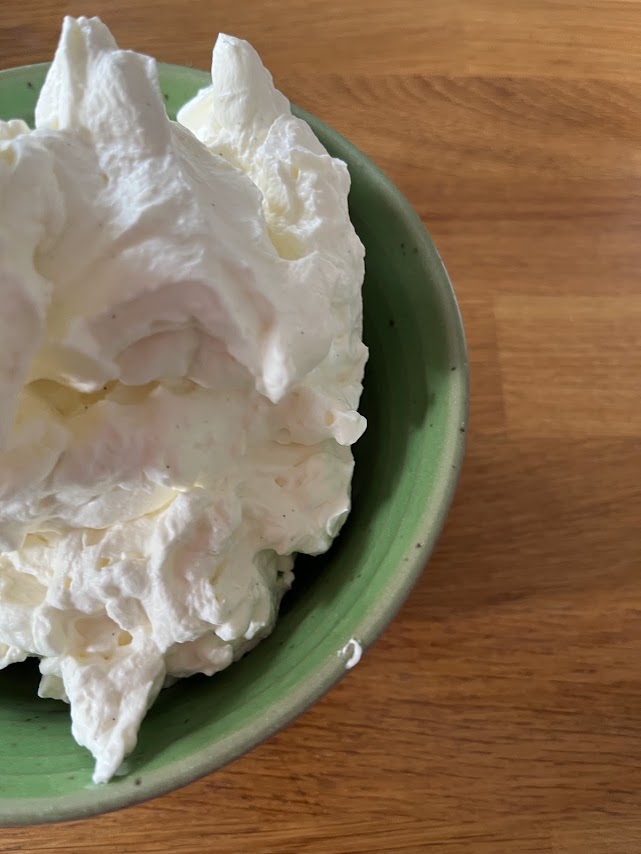
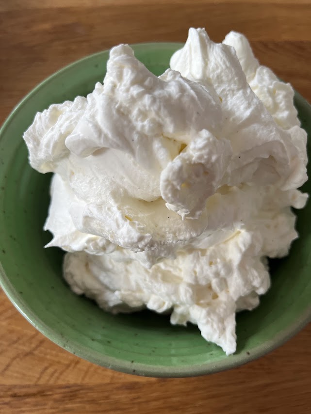

Chantilly
⏱️ Préparation : 6 min
❄️ Froid : 10 min
🔥 Très facile



Étapes
- Placez la crème fleurette ainsi que le bol du batteur au congélateur pendant 10 minutes.
- Versez la crème très froide dans le bol bien refroidi.
- Ajoutez le sachet de sucre vanillé.
- Commencez à fouetter à vitesse moyenne puis augmentez progressivement la vitesse.
- Lorsque la crème commence à épaissir, ajoutez le sucre glace.
- Continuez à fouetter jusqu'à obtenir une chantilly ferme et aérienne.
- Utilisez immédiatement ou conservez au réfrigérateur jusqu'au moment du service.
Conseil
Pour réussir une chantilly bien ferme, tous les ingrédients ainsi que le matériel doivent être parfaitement froids.